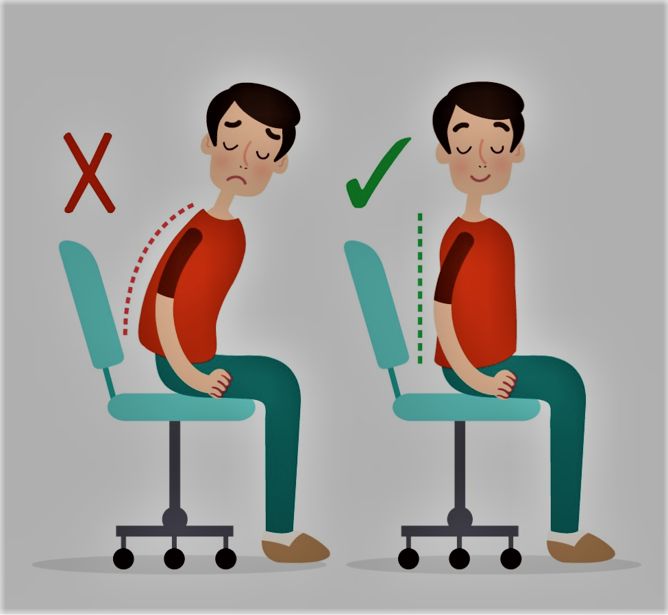
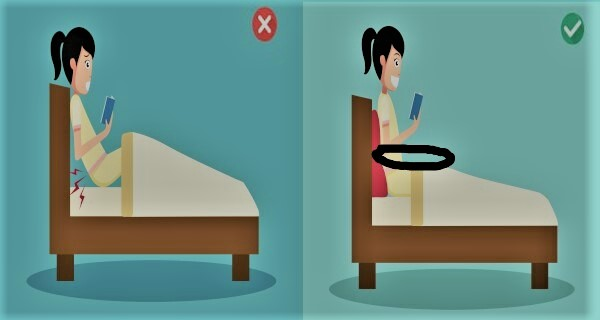
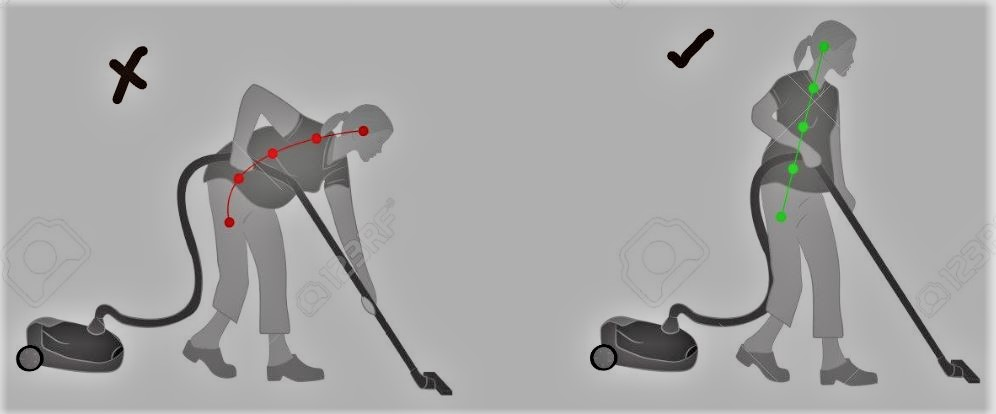
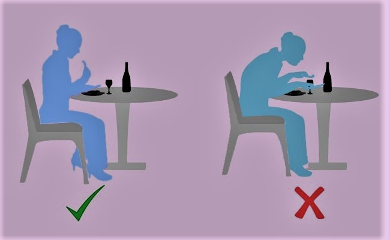

Home
Videos
About us

Sitting
Poor posture can lead to
Spine Curvature
Back Pain, neck pain and headache
Can lead to digestive issues
To maintain correct posture
Sit up with your back straight
Your shoulders back
Your buttocks should touch the back of your chair

On bed
Poor posture can lead to
Aggravate neck or back pain
Obstructive sleep apnea
Alzheimer's or Parkinson's
To maintain correct posture
Try to keep your position as flat as possible when sleeping on your back

Cleaning
Poor posture can lead to
Neck or Back pain
Knee pain
Unwanted strain on your upper and lower back
To maintain correct posture
Stand as straight as possible
Avoid being in the same position for a long time

Nutrition
Poor posture can lead to
Slouched posture after or while a meal can trigger heartburn caused by acid reflux
Lack of interest in taking nutrition
To maintain correct posture
The goal is a neutral, upright spine position - not flexed too far forward or backward